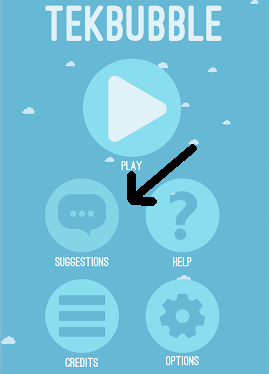
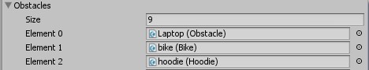
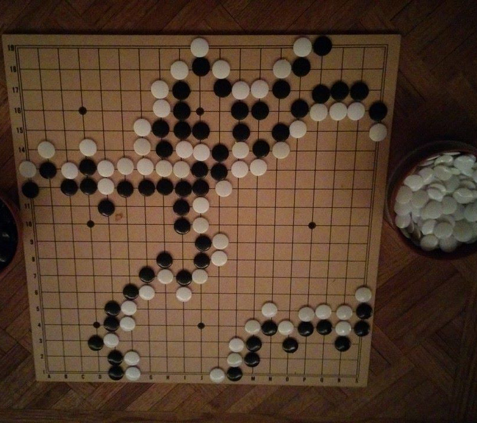

I used a mailto link for suggestions as well as Facebook analytics to connect with our users.

TekBubble is a side scrolling game where you rise to the stars in a TekBubble. I served as team lead, doing code reviews and merging. I also created a system for automatically adding new obstacles class Alien : Obstacle { and backgrounds into our game.

I gave the developers design patterns to follow, like Coroutines and Inheritance.
private IEnumerator CreateCloud()
{
while(!gameOver)
{
//get a random starting position for the cloud
Vector3 cloudPos = new Vector3(GetRandomBackgroundPos());
//get an inactive cloud from the cloudpool
Cloud cloud = cloudPool.GetObj();
//parallax
float scale = Random.Range (.05f, .3f);
cloud.transform.localScale = new Vector3(scale,scale,1);
cloud.transform.position = cloudPos;
cloud.gameObject.SetActive(true);
//wait for before making another one
float secondsUntilNext =
2/Game.speed + Mathf.Max((height-2500) / 6500f, 0);
yield return new WaitForSeconds(secondsUntilNext);
}
}
I also used a Mesh Particle Renderer to make the bubble pop.
If I were to continue developing TekBubble, I would design a game element that gives a strong feeling of progression to the game, like adding Boss levels to separate increasing jumps in difficulty. Right now the difficulty increases continuously, which testers said doesn't give enough reward, especially in the long pre-space stage.
ChessGo
John Chen and I invented ChessGo one late night playing Go under candlelight. The rules are a combination of Chess and Go: players can either make a standard Chess move or place a Go stone anywhere on the board. When a group of pieces is surrounded, it dies. We immediately got to writing a working prototype for our creation.

One challenge was deciding whether a connected group of pieces was surrounded or not.
// Returns in a list all orthogonally adjacent but not out of bound points
public static HashSet GetAdjacentPoints(Point p)
{
HashSet neighbors = new HashSet();
//Up
if (p.row < MAXROW) { neighbors.Add(new Point(p.row + 1, p.col)); }
//Down
if (p.row > 0) { neighbors.Add(new Point(p.row - 1, p.col)); }
//Left
if (p.col < MAXCOL) { neighbors.Add(new Point(p.row, p.col + 1)); }
//Right
if (p.col > 0) { neighbors.Add(new Point(p.row, p.col - 1)); }
return neighbors;
}
public static HashSet GetNeighbors(HashSet group, char[,] board)
{
HashSet neighbors = new HashSet();
foreach (Point p in group)
{
HashSet localNeighbors = GetAdjacentPoints(p);
foreach (Point n in localNeighbors)
{
if (!group.Contains(n))
{
neighbors.Add(n);
}
}
}
return neighbors;
}
//Returns a list of all pieces that are directly connected
public static HashSet GetGroup(Point p, char[,] board)
{
HashSet group = new HashSet();
group.Add(p);
int i = 0;
int prevSize = 1;
do
{
prevSize = group.Count;
HashSet neighbors = GetNeighbors(group, board);
i++;
foreach (Point n in neighbors)
{
if ((IsWhiteAt(p, board) && IsWhiteAt(n, board)) || (IsBlackAt(p, board) && IsBlackAt(n, board)))
{
group.Add(n);
}
}
//Just in case of infinite loop!
if (i == MAXCOL * MAXROW - 1)
{
Debug.LogError("Something went wrong in GetGroup");
break;
}
} while (prevSize != group.Count && i < MAXCOL * MAXROW);
return group;
}
public static HashSet GetLiberties(Point p, char[,] board)
{
HashSet group = GetGroup(p, board);
HashSet liberties = GetNeighbors(group, board);
return liberties;
}
//Checks to see if group that piece at point p belongs to is totally surrounded - none of its liberties are occupied by an empty space
public static bool IsGroupDead(Point p, char[,] board)
{
HashSet liberties = GetLiberties(p, board);
foreach (Point l in liberties)
{
if (IsEmptyAt(l, board)) { return false; }
}
return true;
}
public static int CountLiberties(Point p, char[,] board)
{
HashSet liberties = GetLiberties(p, board);
int count = 0;
foreach (Point l in liberties)
{
if (IsEmptyAt(l, board)) { count++; }
}
return count;
}
ChessGo was designed with multiplayer in mind, so I reincarnated some client/server socket code I had written for a card game previously.
void OnReceiveServerMessage(Message msg)
{
int message = msg.message;
string[] parameters = msg.parameters;
switch (message)
{
case Messages.STARTGAME:
{
//Deciding whether server picked black or white for us
IAmBlack = AsyncServerConnection.FixParam(parameters[0]).Equals("1");
//Setting up the camera accordingly
if (!IAmBlack)
{
curHotspot = 6;
myTurn = false;
myTurnText.enabled = false;
Debug.Log("I am White!");
StartCoroutine(Rotate180(camera.transform));
AsyncServerConnection.Receive();
}
else
{
curHotspot = 0;
StartTurn();
}
break;
}
//Execute opponent's chess move.
case Messages.MOVE:
{
//escape the parameters
string[] fromMove = parameters[0].ToString().Split(',');
//get board coords
Point p1 = new Point(int.Parse(fromMove[0]), int.Parse(fromMove[1]));
//the move was a Go placement
if (parameters.Length == 1)
{
PlaceGoStone(p1);
}
//the move was a chess move
else
{
string[] toMove = parameters[1].ToString().Split(',');
Point p2 = new Point(int.Parse(toMove[0]), int.Parse(toMove[1]));
//checks if move is valid, if so it updates board[][]
if (MovePieceBoard(p1, p2))
{
//move gameobject to p2
Transform piece = pieces[p1.row, p1.col].transform;
MovePieceTable(piece, p1, p2);
piece = pieces2D[p1.row, p1.col].transform;
MovePieceTable2D(piece, p1, p2);
CheckSurrounded(p2);
}
else
{
Debug.LogError("Server sent us an invalid move");
}
}
StartTurn();
break;
}
case Messages.CHAT:
{
//escape the parameters
string chat = parameters[0].ToString();
ReceiveChat(chat);
break;
}
}
}
Looking back, even though both views are based on the same model, I could have integrated the 2D and 3D views more gracefully with more abstraction. With a little more abstraction, I wouldn't always have to tell both views to update individually. The problem came up because the 2D view became a requirement after the 3D view, but this could easily be fixed with some refactoring.
Another useful change that would make the camera rotation more intuitive would be allowing the user to drag around to rotate it. We considered other UX improvements, like not moving the pieces until the user selects a destination and adding a tutorial mode, but decided to put them off for later.
I also used Markov Chain Monte Carlo to make a random name generator: